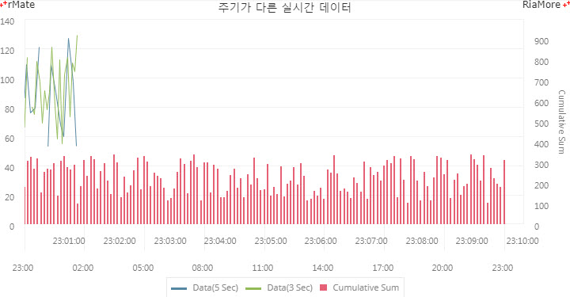

실시간 프리미엄 차트
실시간 프리미엄 차트는 실시간 차트의 기능보다 향상된 기능을 제공합니다.
데이터 로드를 위해서 실시간 차트처럼 원격 호출(RPC, Remote Procedure Call) 방식을 이용하지만 다음과 같은 다른 특징들이 있습니다.
- 차트에 표현되는 데이터 시리즈별로 원격 호출을 설정할 수 있습니다. 예를 들어 차트에 표현되는 데이터 시리즈가 3 개라고 할 때, 각 데이터 시리즈를 위한 3 개의 다른 URL 과 주기를 지정할 수 있습니다.
- 실시간 차트에서는 새로운 데이터가 읽혀지면 차트의 오른쪽 끝에 표현되어 시간이 갈 수록 왼쪽으로 이동하지만, 실시간 프리미엄 차트에서는 왼쪽 끝에 첫 데이터가 표현되고 새로운 데이터들은 점점 오른쪽에 표현됩니다. 그리고 설정된 시간 범위 동안 화면에 존재하게 됩니다. 각 데이터 시리즈별로 주기와 표시되는 시간 범위를 다르게 설정할 수 있습니다.
- 초기 데이터를 차트에 표현해야 할 경우, 차트의 로딩이 완료된 시점에 초기 데이터를 읽어서 표시할 수 있습니다.
- 실시간 프리미엄 차트의 X 축에는 <DateTimeAxis> 노드만 정의할 수 있습니다. 실시간 차트에서 사용 가능한 <CategoryAxis> 노드는 실시간 프리미엄 차트에서 지원되지 않습니다.
실시간 프리미엄 차트는 <HttpMultiServiceRepeater> 노드를 chart 노드와 동일한 레벨(형제 노드)에 정의하여 생성할 수 있습니다.
이 때 실시간 차트에서와 같이 <RealTimeChart> 노드를 정의할 필요는 없습니다.
실시간 프리미엄 차트 생성을 원하는 chart 노드(예, <Column2DChart>, <Combination2DChart>, 등)와 동일한 레벨(형제 노드)에 <HttpMultiServiceRepeater> 노드를 정의하기만 하면 됩니다.
| 속성명 |
유효값 (*: 기본값) |
설명 |
| baseURL |
텍스트
|
RPC 요청을 보낼 기본 URL을 지정합니다.
<RPCItem> 노드의 url 속성값과 결합된 값(“baseURL + RPCItem의 url”)이 RPC 요청을 보낼 최종 URL 이 됩니다.
|
| requestTimeout |
숫자 (second)
|
RPC 요청에 대한 최대 응답 대기 시간을 지정합니다.
|
| rpcList |
<RPCItem> 배열
|
RPC 요청 정보를 <RPCItem> 노드에 설정합니다.
|
| showErrorMessage |
true(*), false
|
원격 호출(RPC)이 실패할 경우 경고 메시지를 표시할 지 여부를 설정합니다.
|
| targetController |
텍스트
|
chart 노드의 id 속성값을 지정합니다.
|
<RPCItem> 노드에서 사용 가능한 속성은 다음과 같습니다.
| 속성명 |
유효값 (*: 기본값) |
설명 |
| concurrency |
multiple(*), single, last
|
RPC 요청이 동시에 여러개 발생할 경우 처리 방법을 지정합니다.
multiple: 모든 요청을 보냅니다.
single: 경고 메시지와 함께 한번에 하나의 요청만 보냅니다.
last: 마지막 요청만 보내고 나머지는 취소합니다
|
| interval |
숫자 (second)
|
RPC 요청 주기(초 단위)를 지정합니다.
|
| method |
get(*), post
|
RPC 요청 방법을 지정합니다.
|
| name |
텍스트
|
<RPCItem> 노드의 이름을 지정합니다. 반드시 임의의 이름을 지정해야 합니다.
|
| retryCount |
숫자
기본값: 30
|
RPC 요청 실패 시에 재시도할 횟수를 지정합니다.
|
| target |
텍스트
|
<RPCItem>이 적용될 해당 데이터 시리즈의 id 속성값을 지정합니다.
|
| url |
텍스트
|
RPC 요청을 보낼 URL 을 지정합니다.
<HttpMultiServiceRepeater> 노드의 baseURL 속성값과 결합된 값(<HttpMultiServiceRepeater> 노드의 “baseURL + url”)이 RPC 요청을 보낼 최종 URL 이 됩니다.
|
다음은 두 개의 라인 시리즈와 하나의 컬럼 시리즈를 표현하는 콤비네이션 차트(<Combination2DChart>)에 실시간 프리미엄 차트를 적용하는 코드와 출력된 결과입니다.
실시간 차트에서와 마찬가지로 setData() 함수는 호출하지 않고 setLayout() 함수만 호출합니다.
function chartReadyHandler(id) {
document.getElementById(id).setLayout(layoutStr);
}
<Combination2DChart id="chart" showDataTips="true" dataTipMode="multiple">
<series>
<Column2DSeries id="columnSeries" xField="date" yField="data60" displayName="Cumulative Sum">
<horizontalAxis>
<DateTimeAxis id="hAxis" displayLocalTime="true" labelUnits="hours" dataUnits="minutes" interval="3" dataInterval="10" formatter="{dateOrgFmt}" displayName="Time"/>
</horizontalAxis>
<verticalAxis>
<LinearAxis id="vAxis" minimum="0" maximum="999" title="Cumulative Sum"/>
</verticalAxis>
...
</Column2DSeries>
<Line2DSeries id="lineSeries" xField="date" yField="data5" displayName="Data(5 Sec)">
<horizontalAxis>
<DateTimeAxis id="hAxis2" displayLocalTime="true" labelUnits="minutes" dataUnits="seconds" interval="1" formatter="{dateOrgFmt}" displayName="Time"/>
</horizontalAxis>
<verticalAxis>
<LinearAxis id="vAxis2" minimum="0" maximum="150"/>
</verticalAxis>
...
</Line2DSeries>
<Line2DSeries id="lineSeries2" xField="date" yField="data3" displayName="Data(3 Sec)" verticalAxis="{vAxis2}" horizontalAxis="{hAxis2}">
...
</Line2DSeries>
</series>
...
</Combination2DChart>
<HttpMultiServiceRepeater baseURL="http://demo.riamore.net/chartTest/" targetController="{chart}" requestTimeout="30">
<RPCList>
<RPCItem name="rpc1" url="data3Interval.php" target="{lineSeries2}" interval="3" concurrency="last" retryCount="30"/>
<RPCItem name="rpc2" url="data5Interval.php" target="{lineSeries}" interval="5" concurrency="last" retryCount="30"/>
<RPCItem name="rpc3" url="data23ToCurrent2.php" target="{columnSeries}" interval="600" concurrency="last" retryCount="30"/>
</RPCList>
</HttpMultiServiceRepeater>

See the CodePen 알메이트 차트 - 실시간 프리미엄 차트
위 예제에서는 3 개의 <RPCItem> 노드가 설정되었고 각각 2 개의 라인 시리즈와 1 개의 컬럼 시리즈의 데이터를 원격 요청합니다.
2 개의 라인 시리즈(<Line2DSeries>)에 대한 원격 요청 주기는 각각 3 초(interval = “3”), 5 초(interval = “5”)이고,
컬럼 시리즈<Column2DSeries>에 대한 원격 요청 주기는 10 분(interval = “600”)입니다.
2 개의 라인 시리즈의 초기 데이터는 없으며 차트가 최초에 생성된 다음 10 분 동안(데이터 시간 범위) 설정된 주기에 원격 요청하여 하나씩 데이터를 표시하고, 10 분이 지나면 화면에 표시된 데이터를 모두 삭제한 후 다시 10 분 동안의 데이터를 표시하는 것을 반복합니다.
컬럼 시리즈는 10 분 동안에 누적된 데이터를 표시하는 예제인데, 10 분 주기에 원격 요청하여 컬럼을 하나씩 표시하게 됩니다.
이 예제에서 사용된 서버 스크립트의 소스 파일은 아래 디렉토리에서 찾으실 수 있습니다.
설치 디렉토리/Samples/RealtimeServerSamples/
|